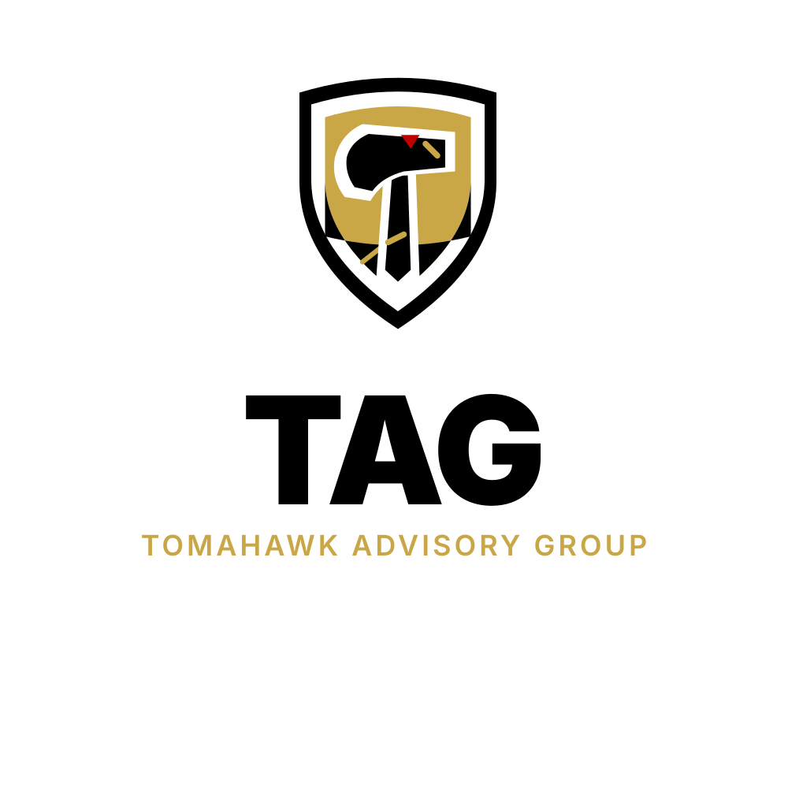

Economic Development
Opportunity framing, business cases, partnership logic, and decision support for projects that need executive clarity before they move.

Tomahawk Advisory GroupTomahawk Advisory Group
TAG helps leadership teams turn opportunity into organized action through Indigenous business management, economic development strategy, procurement readiness, policy-aware planning, and practical execution support.
Led by CEO Marc Smith, with 50 years of advisory experience.
Work
TAG is designed for organizations that need more than a good idea. We bring structure to decisions, documents, partners, and next steps.
Opportunity framing, business cases, partnership logic, and decision support for projects that need executive clarity before they move.
Capability narratives, bid positioning, document readiness, and practical support for public, industrial, and partnership-driven opportunities.
Scopes, milestones, risk registers, stakeholder maps, and meeting rhythms that help teams move with confidence.
Follow-through, briefing materials, coordination, and operating discipline for leaders who cannot afford drift.
Indigenous Advisory Lens
TAG’s advisory approach is informed by Marc Smith’s 50 years of experience advising governments, Indigenous organizations, corporations, non-profits, economic development entities, and community leadership.
Economic development corporations, procurement strategies, partnership structures, joint ventures, Indigenous ownership models, capacity building, community benefit agreements, and long-term wealth creation.
Clear business interpretation of rights and policy contexts, including Section 35, treaty rights, modern treaties, land claims, consultation, UNDRIP, and free, prior and informed consent.
Trauma-informed engagement, anti-racism, respectful communication, protocol awareness, distinctions-based thinking, and avoidance of pan-Indigenous assumptions.
Practical respect for elected, hereditary, traditional, tribal, Métis, Inuit, regional, and community-specific decision-making structures.
Method
We start with the operating reality: goals, constraints, people, timing, risks, and what must be decided next.
We turn raw direction into usable plans, briefs, proposals, governance tools, and decision-ready documents.
We support the next round of action so plans do not sit still: meetings, revisions, coordination, and accountability.
Leadership
Chief Executive Officer
Marc Smith brings 50 years of experience advising governments, Indigenous organizations, corporations, non-profits, economic development entities, and community leadership on Indigenous business management, Aboriginal law and policy contexts, cultural competency, and practical organizational change.
TAG’s advisory work is built around humility, accountability, clear language, and delivery. The firm supports leaders who need strategic advice that respects history, governance, rights, community-defined outcomes, and long-term trust.
Contact
For advisory inquiries, procurement support, project planning, or executive coordination, reach TAG through the company inbox or Marc’s executive contact.